सुविकल्प: Mine Repurposing Tool
Select factors and sub-factors to discover suitable repurposing options for your mining site
![Coal Controller Organisation emblem]()
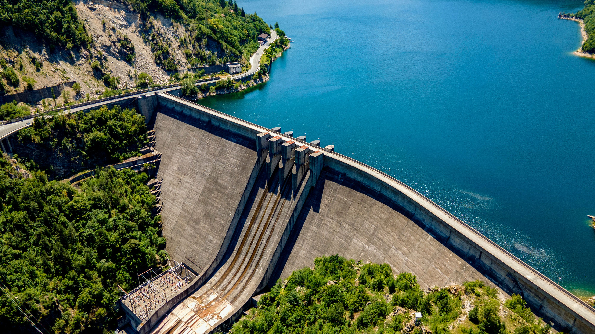
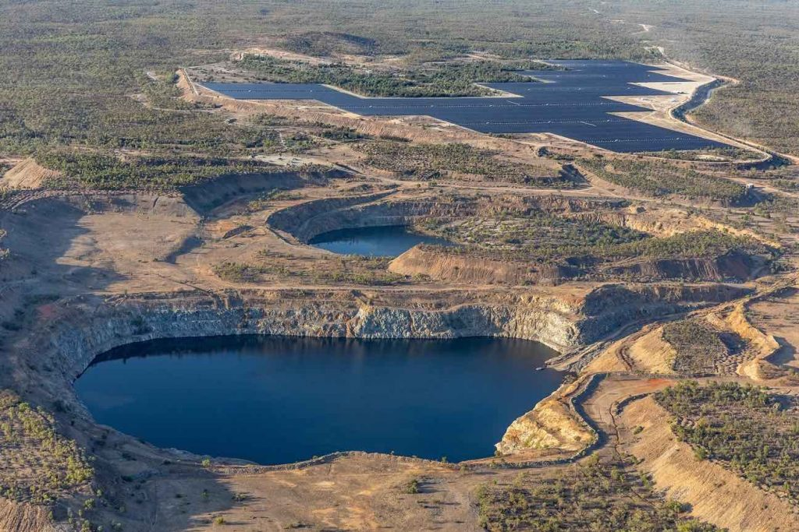
Pumped Hydro Storage (PHS) — also called a Pumped Storage Project (PSP) — converts electrical energy into potential hydraulic energy by pumping water to an upper reservoir during surplus power, and recovers it through turbines during peak demand. It is the world's most proven form of long-duration grid-scale energy storage.
For closed coal mine areas, existing mine voids, open-cast pits, and mine-water bodies can serve as one of the reservoirs — reducing excavation cost and giving new purpose to post-mining land. This is a selective repurposing option, not a universal one.
Post-mining site context, suitability criteria, and owner-side readiness needed before committing to a Pumped Hydro Storage project.
A closed coal mine typically leaves deep open-cast pits, underground workings, overburden dumps, mine-water bodies, access roads, electrical corridors, and perimeter fencing. For pumped hydro storage, the most valuable post-mining assets are: the pit geometry (potential lower reservoir), elevated dumps or adjacent ridges (potential upper reservoir), and existing infrastructure that can reduce enabling costs.
However, the post-mining context also introduces hazards: slope instability, subsidence from underground voids, acid mine drainage, sedimentation, and contaminated mine water. All must be assessed before committing to a PHS project.
India's rapid renewable energy expansion demands large-scale, long-duration storage to balance intermittent solar and wind generation. Pumped Hydro Storage is the only commercially proven, multi-gigawatt-hour storage technology at a cost competitive with new hydropower. Closed coal mines offer three strategic advantages for PHS development:
A mine site should pass five critical screening tests before PHS is considered viable:
The following matrix provides a structured checklist for assessing the suitability of the proposed site for the selected repurposing option. It identifies the key physical, technical, environmental, infrastructure, legal, and owner-side readiness parameters that should be reviewed before the project is advanced to the next stage of development. The purpose of this matrix is to help the project owner understand existing site conditions, technical requirements, potential constraints, and preparatory actions required before feasibility studies, approvals, or tendering are initiated.
The following matrix presents an indicative relationship between available site area, project scale, technical configuration, and likely development potential. It is intended to support preliminary planning by helping the project owner identify the appropriate scale and configuration for the proposed repurposing option. The values and recommendations are indicative and should be refined through detailed feasibility studies, site surveys, engineering assessments, and relevant technical and commercial evaluations.
| Scale | Capacity | Storage Duration | Min. Hydraulic Head | Reservoir Area (approx.) | Typical Application |
|---|---|---|---|---|---|
| Pilot / Small | 5–50 MW | 4–6 hours | 50–150 m | 2–10 ha combined | Grid-balancing proof of concept; isolated mine pit |
| Medium | 50–250 MW | 6–10 hours | 150–300 m | 10–40 ha combined | State-level RE firming; large open-cast pit + ridge |
| Large | 250–1,000 MW | 8–12 hours | 200–500 m | 40–150 ha combined | Regional grid storage; multiple pits or deep mine terrain |
| Ultra-large | 1,000 MW+ | 10–16 hours | 300 m+ | 150+ ha combined | National grid balancing; greenfield-equivalent scale on mine land |
Project configurations, key infrastructure components, and phased development strategy for mine-area Pumped Hydro Storage.
The following table outlines the possible implementation models that may be considered for developing the proposed repurposing project. These models differ in terms of ownership structure, funding responsibility, private sector participation, operational control, and long-term risk allocation. The purpose of this table is to help the project owner compare broad development routes and select an implementation approach that aligns with its financial capacity, institutional preference, risk appetite, and long-term asset management objectives.
Depending on site characteristics, a mine-area PHS project may be structured as:
The following comparative assessment evaluates the major implementation models across key decision parameters such as investment requirement, ownership control, financing responsibility, contractual complexity, risk transfer, and long-term economic benefit. This matrix is intended to support early-stage decision-making by highlighting the relative strengths and limitations of each model. The final choice of model should be guided by the specific circumstances of the project, including its scale, commercial viability, applicable policy framework, and the owner's institutional preference.
The following table explains how major project responsibilities are typically allocated under different implementation models. It covers key functional areas such as site availability, financing, design and construction, regulatory approvals, operation and maintenance, revenue collection, asset ownership, and end-of-term transfer. This helps clarify the respective roles of the project owner, private developer, EPC contractor, operator, or concessionaire, and supports the preparation of tender documents and contractual structures.
A phased approach is strongly recommended for mine-area PHS projects. A pilot module (5–25 MW) can validate site conditions — head, reservoir performance, slope stability, water quality, and grid response — before committing to full-scale development. Phased expansion reduces upfront risk and allows commercial scale-up aligned with grid and market conditions. DBFOT and Concession models support phasing most naturally through concession terms.
Implementation models, revenue streams, recommended approaches, and funding sources for mine-area PHS development.
The following table presents the broad funding logic for each implementation model. It explains who is expected to finance the project, the level of owner-side funding requirement, and the commercial rationale behind each structure. This section is intended to help the project owner assess whether the project is more suitable for owner-funded development, private investment, public-private partnership, lease or concession structure, or a hybrid funding arrangement.
| Model | Owner Investment | Overall Suitability for Mine PHS |
|---|---|---|
| EPC | Very High | Moderate |
| EPC + O&M / FM | Very High | High |
| BOOT | Low to Moderate | High |
| BOO | Low | Moderate |
| DBFOT | Low to Moderate | Very High |
| Concession / Lease-Develop-Operate | Low to Moderate | Very High |
| Hybrid | Variable | Very High |
Revenue streams for a mine-area PHS project include:
Under owner-led models (EPC / EPC+O&M), the mine owner captures full operational revenue but bears full capital and operating risk. Under developer-led models (DBFOT, Concession), the mine owner receives lease income, concession fee, milestone payments, and eventual asset transfer.
The concept note's final recommendation for mine-area PHS is:
The following table assesses the likely local livelihood and employment potential of each implementation model. It considers the extent to which each model can support construction-phase jobs, long-term operational employment, local procurement opportunities, skill development, community participation, and associated support services. This section is particularly relevant where the repurposing project is expected to contribute to post-mining or post-operational economic transition and sustained local community benefit.
EPC + O&M is a secondary option only where the owner is a sovereign entity, PSU, DISCOM, or GENCO with adequate capital and strategic storage use.
The following combined comparison brings together three important dimensions of project structuring: revenue potential, owner-side financial benefit, and local livelihood generation. It provides a consolidated view of how each implementation model performs across commercial, institutional, and community-development perspectives. This matrix is intended to support balanced decision-making where the objective extends beyond financial return to include sustainable site reuse and long-term local economic benefit.
The following table explains how revenue may be generated under different implementation models and identifies who is likely to receive the principal project income. It also describes the nature and extent of the financial benefit available to the project owner, whether through direct project revenue, cost savings, lease income, concession fees, revenue sharing, service charges, or eventual asset transfer. This comparison is intended to support the selection of a commercially appropriate model for the proposed repurposing project.
Pre-tender readiness, RFP conditions, post-award scope, and the 14-step implementation pathway for mine-area PHS.
The following section identifies the key owner-side preparatory actions that should ideally be completed before issuing the first Request for Proposal. These actions are aimed at reducing uncertainty for prospective bidders, improving project bankability, clarifying site availability, identifying approval pathways and risks, and defining the technical and commercial scope of the project. Completing these preparatory steps before tendering can improve bid quality, attract credible responses, and reduce the risk of delays during project implementation.
Before issuing an RFP for a Pumped Hydro Storage based mine-repurposing project, the mine owner should prepare the following in priority order:
The following section lists the principal activities that may be undertaken by the selected contractor, developer, concessionaire, operator, or implementation agency after award of the project. These activities generally include detailed site investigations, engineering design, statutory submissions and approvals, equipment procurement, construction, commissioning, operational planning, staff training, and performance monitoring. The distinction between pre-RFP owner preparedness and post-award implementation responsibilities helps ensure an appropriate and efficient allocation of effort across the project development cycle.
After award, the selected concessionaire / developer / EPC contractor / O&M agency can take up the following activities in chronological order:
The following implementation pathway presents a practical high-level sequence for advancing the proposed repurposing concept from initial approval through to project execution and long-term operation. It outlines the broad stages of concept approval, preliminary studies, model selection, bid preparation, procurement, detailed design, statutory approvals, construction, commissioning, and ongoing operation. This pathway is indicative and should be adapted to reflect the specific complexity, regulatory requirements, financing structure, and site conditions applicable to the project.
Operational safety management, local livelihood generation, and long-term strategic & ESG obligations for mine-area PHS.
The following way forward summarizes the preferred development approach for the proposed repurposing option, based on the assessment presented in PRISM (Post Mining Repurposing Implementation and Strategy Models). It identifies the most suitable implementation models in order of preference, highlights key technical and due-diligence considerations, and outlines the recommended next steps and broad development logic. This section is intended to guide internal decision-making and support the project owner in progressing from concept-stage evaluation toward feasibility assessment, project structuring, regulatory approvals, and implementation planning.
PHS facilities require highly specialized ongoing management across:
PHS projects generate employment across multiple phases and roles:
Hybrid and Concession models are rated Very High for local livelihood generation because they allow explicit employment, training, apprenticeship, and vendor-participation conditions to be written into concession terms.
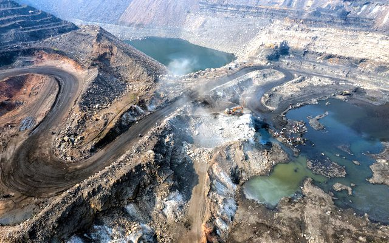
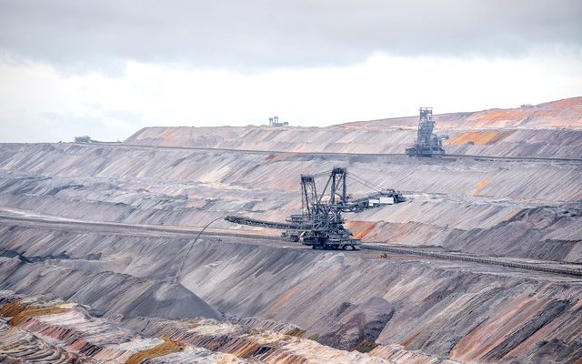
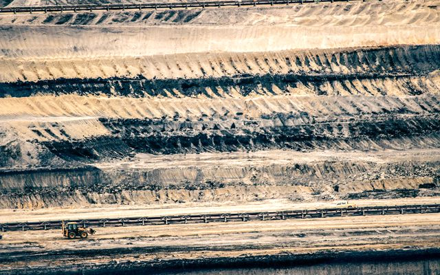
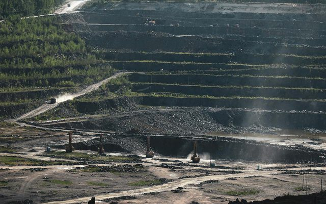
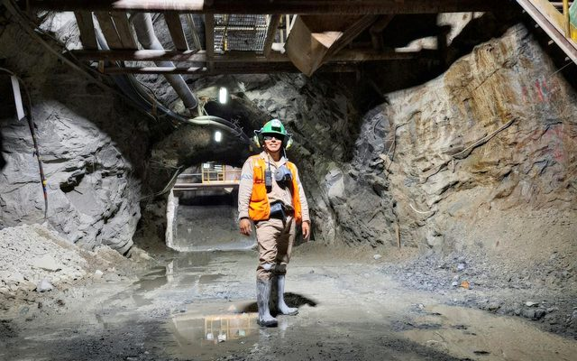
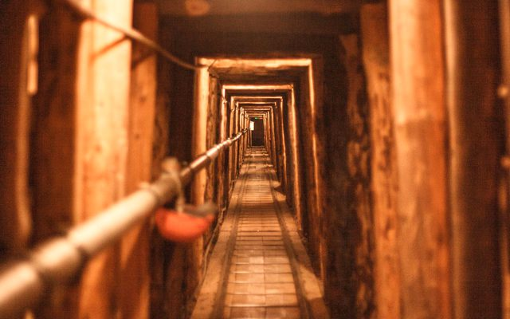
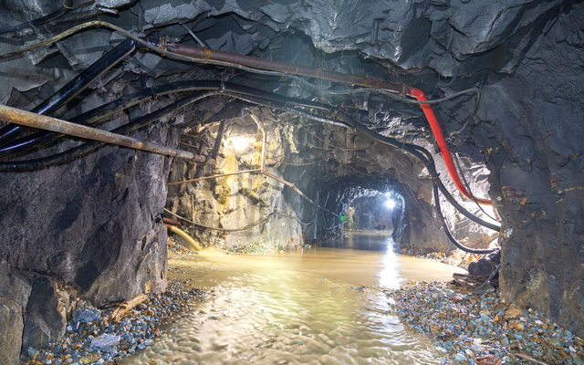

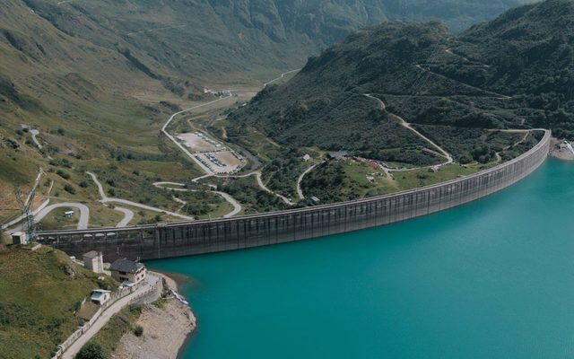
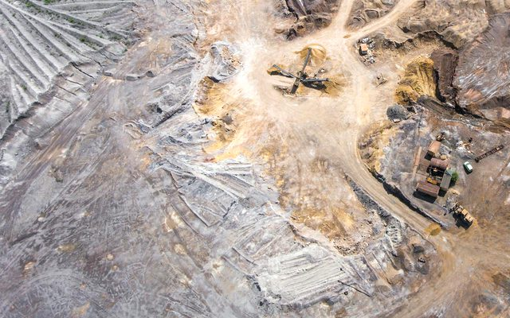
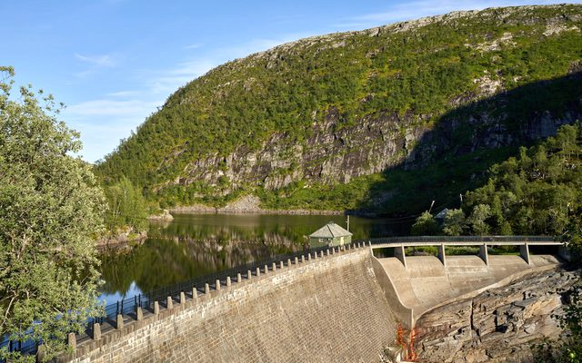
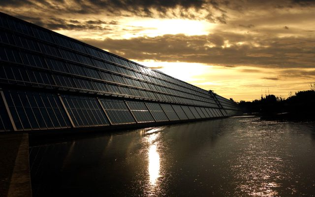
Disclaimer: Inclusion of an expert does not constitute endorsement, empanelment, or recommendation by the Coal Controller Organisation or the Ministry of Coal, Government of India. Users are advised to independently verify credentials and suitability before engaging any individual.
Links open external websites. Coal Controller Organisation does not endorse third-party content.


.svg)
.svg)


Disclaimer: Inclusion of an agency on this list does not constitute endorsement, empanelment, or recommendation by the Coal Controller Organisation or the Ministry of Coal, Government of India. Mine owners and project proponents are advised to conduct their own due diligence process before engaging any agency.